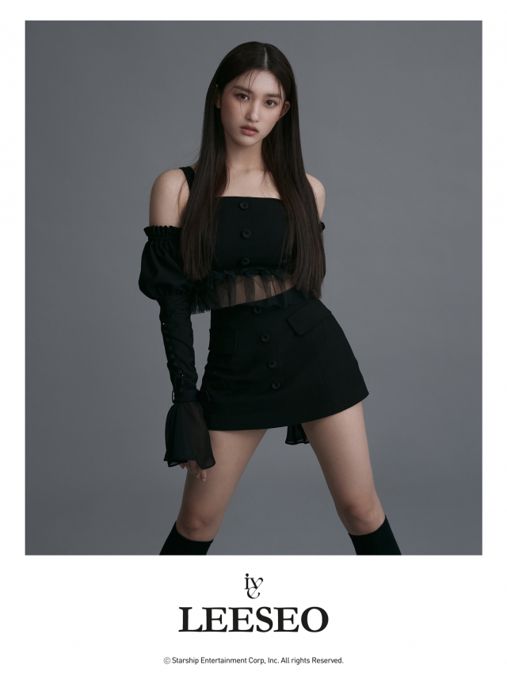
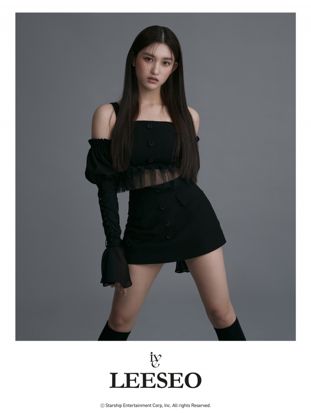

<영역을 표시하는 스타일>
dotted
dashed
solid
double
inset
outset
1px
3px
width difference
color_differ
short
radius
<-- 작동이 잘 안되는 이유를 복습해보자 -->

이미지 태그에 직접 or 클래스 적용 후 border 스타일을 적용해야 사진의 크기도 그에 맞춰서 잘려짐
만약 그 부모나 조상 태그에 아이디를 붙여서 사용하게 되면 그냥 border만 개별적으로 생김
뭐지.. 상위 태그에 아이디가 있어도 복합 선택자를 이용하니 적용이 되었음...
아마도 복합 선택자를 사용하면 마지막에 지정한 특정한 태그를 변동시키는 반면,
그냥 부모 태그(혹은 조상)의 아이디나 클래스를 사용하면 부모 태그가 영향을 받는 것이고
자식 태그는 그 영향의 범주에는 들어있으나, 직접적인 영향을 받는 것은 아닌 것으로 생각됨.
배경을 표시합니다
배경을 표시합니다
 
